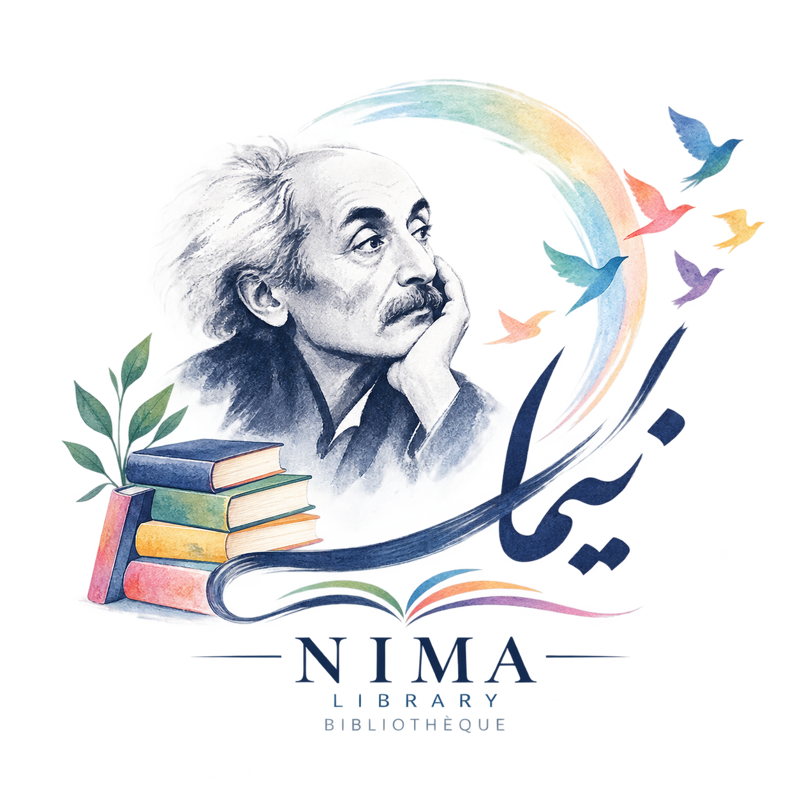

Livres
La littérature, les idées et les connaissances en langue persane.

Bibliothèque Nima YushijLivres persans et patrimoine documentaireUne maison pour les mots persans
Un centre consacré à la conservation des livres et des documents en persan, ainsi qu’aux personnes et aux récits qui les accompagnent.
NIMA YUSHIJ LIBRARY
La Bibliothèque Nima Yushij est une maison consacrée à la conservation des livres et des documents en persan. Fondée par 43 personnes, elle a continué à vivre grâce à de nombreux amis. Nous présentons ici sa collection et son histoire, et honorons la mémoire des amis disparus.
La littérature, les idées et les connaissances en langue persane.
Des écrits et des archives pour conserver nos récits.
Le souvenir des amis dont la vie reste liée à notre communauté.